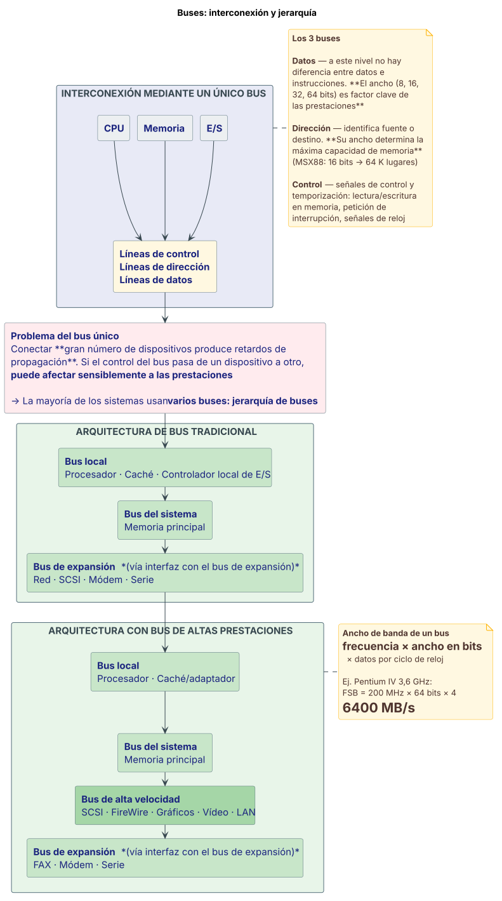

Buses¶
Definición¶
Un bus es un camino de comunicación entre dos o más dispositivos. Normalmente es un medio de transmisión.
Suele agruparse: varios caminos de comunicación o líneas con función común —por ejemplo, un dato de 8 bits puede transmitirse mediante ocho líneas del bus—.
Físicamente es un conjunto de conductores eléctricos paralelos, líneas de metal, que poseen conectores para colocar "tarjetas".
Fuente: Teorías/7 anexo clase 07 sobre_buses.pdf, fil. 7, 12.
Desarrollo¶
Estructuras de interconexión¶
Todas las unidades han de estar interconectadas. Existen distintos tipos de interconexiones para los distintos tipos de unidades: memoria, módulo de E/S y procesador.
| Unidad | Qué recibe y qué envía |
|---|---|
| Memoria | Recibe y entrega datos · Recibe direcciones (ubicación de trabajo) · Recibe señales de control: leer, escribir, temporizar |
| Módulo de E/S | Funcionalmente similar a la memoria. Recibe y entrega datos del/al procesador; envía y recibe datos al/del periférico · Recibe direcciones (ubicación del periférico) · Recibe señales de control del procesador; envía señales de control al periférico · Envía señales de control al procesador: interrupción |
| Procesador | Lee instrucciones y datos · Escribe datos (los procesados) · Envía señales de control a otras unidades · Recibe (y utiliza) señales de interrupción |
Existe una serie de sistemas de interconexión. Las estructuras sencillas y múltiples son las más comunes: por ejemplo, control/dirección/bus de datos (PC) y unibus (DEC-PDP).
Los 3 buses del sistema¶
| Bus | Qué transmite | Factor clave |
|---|---|---|
| Bus de datos | Transmite datos. A este nivel no existe diferencia alguna entre "datos" e "instrucciones" | El ancho del bus es un factor clave a la hora de determinar las prestaciones: 8, 16, 32, 64 bits |
| Bus de dirección | Identifica la fuente o destino de un "dato" —por ejemplo, cuando el procesador desea leer una palabra de una determinada parte en la memoria— | El ancho del bus de direcciones determina la máxima capacidad de memoria posible en el sistema. El MSX88 tiene un bus de dirección de 16 bits, lo que define un espacio de 64 K lugares |
| Bus de control | Transmite información de señales de control y temporización: señal de escritura/lectura en memoria, petición de interrupción, señales de reloj | — |
Problemas de un único bus¶
- Conectar gran número de dispositivos a un bus produce retardos de propagación.
- Si el control del bus pasa de un dispositivo a otro, puede afectar sensiblemente a las prestaciones.
La mayoría de los sistemas utilizan varios buses para solucionar estos problemas: jerarquía de buses.
Arquitectura de bus tradicional¶
La jerarquía de la arquitectura tradicional, de más rápido a más lento:
- Bus local — conecta el procesador, la caché y el controlador local de E/S.
- Bus del sistema — conecta con la memoria principal.
- Bus de expansión — a través de una interfaz con el bus de expansión; cuelgan de él red, SCSI, módem, serie.
Arquitectura con bus de altas prestaciones¶
Variante de la jerarquía que intercala un bus de alta velocidad:
- Bus local — procesador → caché/adaptador.
- Bus del sistema — hacia la memoria principal.
- Bus de alta velocidad — cuelgan SCSI, FireWire, gráficos, vídeo, LAN.
- Bus de expansión — a través de la interfaz con el bus de expansión; cuelgan FAX, módem, serie.
Tipos de buses: dedicados y multiplexados¶
| Dedicados | Multiplexados | |
|---|---|---|
| Idea | Uso de líneas separadas para direcciones y para datos | Uso de las mismas líneas |
| Ejemplo de composición | 16 líneas de direcciones · 16 líneas de datos · 1 línea de control de lectura/escritura (r/w) | 16 líneas de direcciones o datos · 1 línea de control r/w · 1 línea de control para definir direcciones o datos (a/d) |
| Balance | Más líneas | Menos líneas pero más circuitería. ¿Prestaciones? |
Arbitraje del bus¶
El control del bus puede necesitar más de un módulo —por ejemplo, la CPU y el controlador DMA—. Sólo una unidad puede transmitir a través del bus en un instante dado.
Los métodos de arbitraje se pueden clasificar como centralizados o distribuidos:
| Centralizado | Distribuido | |
|---|---|---|
| Quién decide | Un único dispositivo hardware es responsable de asignar tiempos en el bus: el controlador del bus o árbitro | Cada módulo puede controlar el acceso al bus |
| Ubicación de la lógica | Puede estar en un módulo separado o ser parte del procesador | Cada módulo dispone de lógica para controlar el acceso |
Ver la ficha de DMA, donde el DMAC compite con la CPU por el bus.
Temporización¶
Es la forma de coordinar los eventos en el bus.
Temporización síncrona:
- La presencia de un evento está determinada por un reloj.
- El bus incluye una línea de reloj.
- Un intervalo desde un "uno" seguido de otro a "cero" se conoce como ciclo de bus.
- Todos los dispositivos del bus pueden leer la línea de reloj.
- Suele sincronizar en el flanco de subida.
- La mayoría de los eventos se prolongan durante un único ciclo de reloj.
Las señales que muestra el cronograma de la teoría son: reloj, inicio, lectura, líneas de dirección, líneas de datos y reconocimiento.
Temporización asíncrona. El cronograma de la teoría muestra las señales MSYN, SSYN, lectura, líneas de dirección y líneas de datos.
La temporización asíncrona está sólo como cronograma
La filmina 22 muestra únicamente el diagrama de tiempos de la temporización asíncrona (señales MSYN/SSYN de handshake), sin ninguna descripción en texto, a diferencia de la síncrona que sí tiene su lista de características en fil. 20. La descripción del mecanismo asíncrono no está en las fuentes de cátedra, así que no se transcribe acá.
El bus PCI¶
PCI — Interconexión de Componente Periférico. Intel cedió sus patentes al dominio público.
- 32 o 64 bits:
- 32 bit a 33 MHz = 133 MB/s
- 64 bit a 66 MHz = 528 MB/s
Comandos:
- Transacción maestro-esclavo.
- El maestro toma control del bus.
- Determina el tipo de transacción: lectura o escritura.
- Fase de direccionamiento.
- Una o más fases de datos.
Líneas de señal PCI — 49 líneas obligatorias:
| Grupo | Contenido |
|---|---|
| Líneas del sistema | Incluyen reloj y reset |
| Terminales de direcciones y datos | 32 líneas multiplexadas para direcciones y datos · líneas para interpretar y validar eventos |
| Terminales de control de la interfaz | Temporización y coordinación |
| Terminales de arbitraje | Líneas no compartidas · conexión directa al árbitro del bus PCI |
| Terminales para señales de error | — |
51 líneas opcionales — extensión a 64 bits: 32 líneas adicionales, líneas multiplexadas, 2 líneas para transferir a 64 bits.
Fuente: Teorías/7 anexo clase 07 sobre_buses.pdf, fil. 2–6, 8–10, 13, 14, 16, 17–19, 20–22, 23–24, 38.
Diagrama¶
Interconexión y jerarquía de buses¶

Fuente: Teorías/7 anexo clase 07 sobre_buses.pdf, fil. 8–11 (los 3 buses), fil. 13–14 (problema del bus único y arquitectura tradicional) y fil. 38 (bus de altas prestaciones).
Ventajas y desventajas o comparaciones¶
Bus dedicado vs. multiplexado¶
Ver la tabla en Tipos de buses. En síntesis: el multiplexado usa menos líneas pero más circuitería, y la teoría deja abierta la pregunta sobre el impacto en las prestaciones.
Arbitraje centralizado vs. distribuido¶
Ver la tabla en Arbitraje del bus. El centralizado concentra la decisión en un árbitro único; el distribuido reparte la lógica de control de acceso en cada módulo.
Un solo bus vs. jerarquía de buses¶
| Un único bus | Jerarquía de buses | |
|---|---|---|
| Problema | Conectar gran número de dispositivos produce retardos de propagación; el traspaso del control puede afectar sensiblemente las prestaciones | — |
| Solución | — | La mayoría de los sistemas utilizan varios buses: local, del sistema, de alta velocidad y de expansión |
Evolución de la jerarquía de buses — comparativa de anchos de banda¶
| Sistema | FSB (Front Side Bus) | Bus gráfico | Memoria | ATA-UDMA |
|---|---|---|---|---|
| Pentium MMX 266 MHz | 66,66 MHz × 64 bits × 1 dato/clock = 533 MB/s | — | — | — |
| Pentium II 450 MHz | 100 MHz × 64 bits × 1 dato/clock = 800 MB/s | AGP: 66,66 MHz × 32 bits × 2 datos/clock = 533 MB/s | PC100 SDRAM DIMM: 100 MHz × 64 bits × 1 dato/clock = 800 MB/s | 8,33 MHz × 16 bits × 2 datos/clock = 33 MB/s |
| Pentium III 1,4 GHz | 133,33 MHz × 64 bits × 1 dato/clock = 1066 MB/s | AGP ×4: 66,66 MHz × 32 bits × 4 datos/clock = 1066 MB/s | PC133 SDRAM DIMM: 133,33 MHz × 64 bits × 1 dato/clock = 1066 MB/s | 25 MHz × 16 bits × 2 datos/clock = 100 MB/s |
| Athlon XP 3200+ 2,2 GHz | 166,66 MHz × 64 bits × 2 datos/clock = 2667 MB/s | AGP 8×: 66,66 MHz × 32 bits × 8 datos/clock = 2133 MB/s | PC2700 DDR DIMM (DDR333): 166,66 MHz × 64 bits × 2 datos/clock = 2667 MB/s | 25 MHz × 16 bits × 2 datos/clock = 100 MB/s |
| Pentium IV 3,6 GHz | 200 MHz × 64 bits × 4 datos/clock = 6400 MB/s | AGP 8×: 66,66 MHz × 32 bits × 8 datos/clock = 2133 MB/s | PC3200 DDR DIMM (DDR400): 200 MHz × 64 bits × 2 datos/clock = 3200 MB/s | 25 MHz × 16 bits × 2 datos/clock = 100 MB/s |
El bus PCI se mantiene en 133 MB/s (33,33 MHz × 32 bits × 1 dato/clock) a lo largo de toda la serie.
Cómo se calcula el ancho de banda
En todos los casos la teoría usa la misma fórmula:
ancho de banda = frecuencia × ancho en bits × datos por ciclo de reloj
Ése es el patrón que hay que reproducir si el enunciado pide "calcule" o "¿de qué depende el ancho de banda de un bus?".
Fuente: Teorías/7 anexo clase 07 sobre_buses.pdf, fil. 13, 16–19, 27, 30, 33, 35, 37.
Ejemplo del curso¶
El chipset del Pentium MMX 266 MHz¶
Estructura con North Bridge / South Bridge:
- CPU con caché L1 integrada; caché L2 externa a 66 MHz / 15 ns.
- North Bridge: conecta la CPU (66 MHz – 64 bits, 1 dato por clock → 533 MB/s) con la memoria (16 MHz / 60 ns) y con el bus PCI a 33 MHz → 133 MB/s.
- South Bridge: del bus PCI cuelgan USB (8 MB/s) y vídeo PCI; y hacia abajo el bus ISA.
- Super I/O: mouse, teclado, COM, LPT, floppy.
El chipset del Pentium II 450 MHz¶
- CPU a 450 MHz, con L1 integrada y L2 a 225 MHz (a 1/2 de la frecuencia del núcleo) → 800 MB/s.
- North Bridge a 100 MHz hacia SDRAM DIMM PC-100; AGP ×2 → 533 MB/s; bus PCI a 33 MHz → 133 MB/s.
- South Bridge: ATA 1 y ATA 2 (33 MB/s), USB (8 MB/s), bus ISA.
- Super I/O: mouse, teclado, COM, LPT, floppy.
El chipset del Pentium III 1,4 GHz — aparecen MCH e IOC¶
Cambia la nomenclatura del chipset:
- MCH = Memory Controller Hub — reemplaza al North Bridge. FSB a 1066 MB/s, AGP ×4 a 1066 MB/s, SDRAM DIMMS PC-133 a 133 MHz.
- IOC = I/O Controller — reemplaza al South Bridge, vinculado al MCH por un Hub Interface de 266 MB/s. De él cuelgan PCI (133 MB/s – 33 MHz) y ATA 1 / ATA 2 (100 MB/s), más el Súper I/O.
El Athlon XP 3200+ y el Pentium IV 3,6 GHz¶
- Athlon XP 3200+ (2,2 GHz): North/South Bridge, FSB a 333 MHz efectivos → 2667 MB/s, AGP 8×, DDR SDRAM DIMMS PC-2700/DDR333 a 2667 MB/s, PCI a 33 MHz.
- Pentium IV (3,6 GHz): MCH/IOC, FSB a 800 MHz efectivos → 6400 MB/s, memoria DUAL-CHANNEL PC3200/DDR400 a 6400 MB/s, AGP 8× → 2133 MB/s, Hub Interface de 266 MB/s hacia el IOC.
El MSX88 y el bus de direcciones¶
El ejemplo más directo que da la teoría: el MSX88 tiene un bus de dirección de 16 bits, lo que define un espacio para direcciones de 64 K lugares. Es el caso concreto de la regla "el ancho del bus de direcciones determina la máxima capacidad de memoria posible en el sistema".
Intel Core i7
La filmina 41 muestra el esquema del Intel Core i7 como último eslabón de la evolución de la jerarquía de buses, pero es sólo una imagen sin texto explicativo, a diferencia de los chipsets anteriores, que sí traen su filmina de cálculo de anchos de banda.
Fuente: Teorías/7 anexo clase 07 sobre_buses.pdf, fil. 9, 26–27, 29–30, 32–33, 34–35, 36–37, 41.
Preguntas de final sobre este tema¶
:material-help-box: Ver el banco de preguntas de buses
Fuentes citadas¶
Teorías/7 anexo clase 07 sobre_buses.pdf— 43 filminas. Única fuente de cátedra del tema: no hay una clase teórica numerada de buses, sólo este anexo de la clase 07.
SCSI aparece nombrado pero no desarrollado
SCSI figura en los esquemas de jerarquía de buses (fil. 14 y 38) como un dispositivo colgado del bus de expansión o del bus de alta velocidad, pero el anexo no lo desarrolla: no hay filminas sobre su funcionamiento, arbitraje ni protocolo. Si un enunciado de final pide describir SCSI, el contenido no está en las fuentes de cátedra.
Lecturas recomendadas que da la propia cátedra (fil. 43): Organización y
Arquitectura de Computadoras, William Stallings, capítulo 3, 5.ª ed.; Diseño y
evaluación de arquitecturas de computadoras, M. Beltrán y A. Guzmán, capítulo 2,
apartado 2.8, 1.ª ed.; www.pcguide.com/ref/mbsys/buses/; páginas de fabricantes.